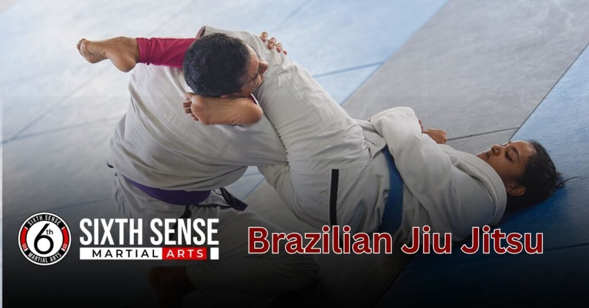
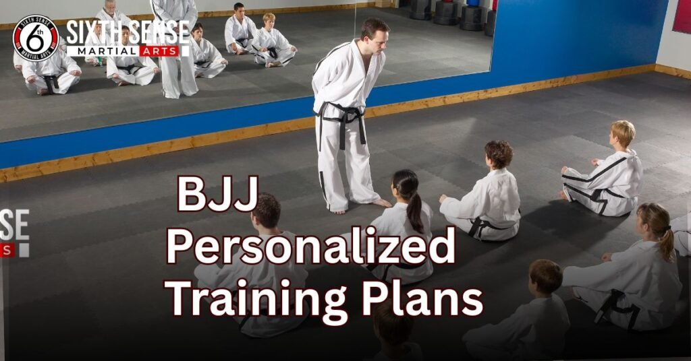
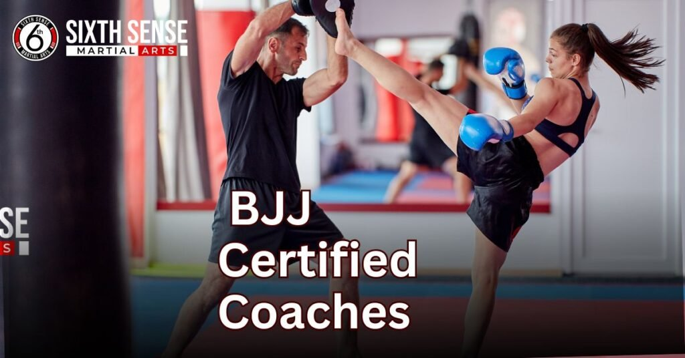

Brazilian Jiu Jitsu near me Join now with Flexible Pricing

Brazilian Jiu Jitsu near me if that’s what you’ve been searching for, you’re not alone. Many people are choosing BJJ to learn real self-defense, boost fitness, and build confidence. At SixthSense MMA, we make it easy for beginners and experienced students to get started. Our classes are welcoming, the coaches are supportive, and every session is built around your pace and goals.
What Is Brazilian Jiu Jitsu and Why Is It So Popular?
Brazilian Jiu Jitsu near me (BJJ) is a martial art that teaches you to use your body, breathing, and smart techniques to stay calm and in control, whether you’re in a fight, facing real-life threats, or building confidence through training.
Unlike sports focused on punching or kicking, BJJ is all about grappling, using leverage over muscle, and outsmarting your opponent with position, locks, choke, and submission moves like the tap. It’s deeply traditional but globally practiced from Japan to the UFC giving you access to a powerful community that values discipline, technique, and real skills anyone can learn.
Real Self Defense Built on Leverage, Not Size
In BJJ, a smaller person can defend themselves against a taller or heavier opponent using proper strategy, joint locks, and grappling positions that apply pressure in the right way. The focus is on staying relaxed, using smart movement, and staying confident through every move. It’s not about being the strongest in the room it’s about having the best technique.
Why Beginners and Pros Both Choose BJJ
- Practical Training: You get real coaching that shows you how to use leverage, not brute strength, to control a fight.
- Calm Mindset: You’ll develop a strong, relaxed mindset through tough but encouraging sparring sessions.
- Real Skills: BJJ builds confidence by teaching effective self-defense for real-life situations.
- Global Community: From local gyms to international tournament scenes, you join a community where every artist supports your growth.
- Fitness with Purpose: Whether you’re building muscle or working on discipline, BJJ transforms your entire body through consistent training.
- For Everyone: It doesn’t matter if you’re a beginner or a UFC fan, BJJ meets you where you are—with a strong foundation in traditional Jitsu and modern strategy.
Looking for Brazilian Jiu Jitsu Near Me? Sixthsense mma What to Expect
At SixthSense MMA, every day on the mat is designed to make you feel welcoming, comfortable, and part of a supportive community, whether you’re a complete beginner or an experienced competitive athlete. Our Brazilian Jiu Jitsu (BJJ) classes are structured for all levels, combining smart teaching and expert coaching to build your confidence, sharpen your skill, and improve your understanding of the MMA world.
From learning how to escape a bad position, to controlling your breathe, we guide you with respect, not ego, and answer all your questions without judgment. Our friendly instructors create a balanced environment where hobbyists and fighters both thrive, and every fall becomes part of your journey.
It’s not just training, it’s a lifestyleand our local schedule gives you the structure and comfort to grow at your pace, without pressure to shout or prove anything. Whether you’re here to roll, learn, or simply try something new, you’ll find a team that’s committed to real progress and long-term growth.
Local BJJ Classes That Fit Your Schedule
When life is packed with work, study, or full-time commitments, finding time to train can feel impossiblebut a flexible schedule changes everything. Whether you prefer a morning routine to start stronger, or an evening class to unwind and shake off the stress, local BJJ classes offer the right timing to match your lifestyle.
At SixthSense MMA, there’s a slot for everyone weekend warriors, busy parents, and people who only have a few spare minutes to invest in their training. With variety in each class, from physical to mental drills, and consistent support along the way, you’ll not only juggle your schedule better you’ll feel more effective, focused, and stronger every step of the way.
How SixthSense MMA Coaches Help You Start with Confidence
- Supportive Instructors
The instructors are kind and patient, focused on teaching without pressure, so you can learn with ease and build confidence. - Pace That Matches You
You’re never rushed learning at your own pace is encouraged, whether you’re new or already a bit experienced on the mat. - Ego-Free Environment
At SixthSense, there’s no ego just coaching that helps you feel safe, ask questions, and grow without judgment. - Real Understanding
Your coach works to truly understand you and explain each step, making sure the basics are clear before moving on. - Breathing and Escapes
You’ll learn how to breathe through tough spots and how to escape from tricky positions calmly and smartly. - Confidence Through Rolling
Practice rolling and learning how to fall safely builds real confidence, even if you’ve never done anything like this before. - Encouraging Atmosphere
The encouraging, pressure free space means no one will ever force you to shout or push harder than you’re ready for.
Flexible Timings for Working Adults and Students
- Designed for Busy Lives
When life feels packed with nonstop work, study, and other responsibilities, our flexible structure helps you easily manage both your goals and your routine. - Morning and Evening Options
Whether you’re an early riser or a night-time grinder, our morning and evening classes give you the freedom to train at the timing that fits your lifestyle. - Weekend Sessions Available
Our weekend sessions are ideal for catching up when weekdays are too hectic—helping you stay on track without compromising your schedule. - Support for Students and Adults
From full-time students to working adults, everyone gets personal support that respects their time, challenges, and learning needs. - Short Yet Effective Training
If your hours are limited, our short, focused training blocks still deliver real, measurable progress you’ll feel in every session. - Flexible to Your Goals
At SixthSense MMA, your individual goals matter—so we make sure our training adapts to you, not the other way around.
What Makes Our Brazilian Jiu Jitsu Classes Different?
Our Brazilian Jiu Jitsu (BJJ) classes stand out by offering more than just moves we focus on personalized coaching that respects your journey, whether you’re here for growth, confidence, or serious competition. You’ll train on clean mats in a safe, respectful space where every session is built around motivation, solid technique, and smart teaching not pressure or contracts.
With no pressure guidance, real support, and direct attention from experienced MMA instructors, your body, mindset, and skills develop in real-time. Whether you’re sparring with a partner, hitting a major milestone, or preparing for a round, the energy is always high and the challenge always feels worth it.
From sparring to training, everything is designed to be productive, safe, and empowering giving you the freedom to learn with respect, make real progress, and feel the difference each time you step on the mat.
Personalized Training Plans Not One Size Fits All
Every student comes with a different story, and our BJJ coaches recognize that—so instead of pushing a fixed routine, they build your training around your needs, pace, and motivation. Whether your goal is self-defense, weight control, competition, or simply personal growth, you’ll follow a plan that adjusts as you hit each milestone.

We blend smart drills and proven technique with encouragement that meets you where you are even on days when you struggle. That’s the experience that sets our class apart: thoughtful coaching designed for real people, not checklists.
Real Sparring, Real Growth Safely
Our sparring sessions are built around respect, safety, and smart practice, giving you the chance to test your reactions, timing, and control in real-time without pressure. You’ll go round by round with supportive partners and coaches who focus on learning, not ego so every challenge becomes a moment of real growth.
It’s a productive, respectful environment where live training sharpens your skills and boosts your confidence, all while keeping things structured and secure.
No Pressure, No Contracts Just Progress
At our gym, we believe training should fit your lifestyle, not feel like a burden so there are no long-term contracts, no hidden commitments, and absolutely no pressure to stick to rigid rules. You train at your own pace, with the freedom to grow without guilt, backed by real support on and off the mats.
Whether you’re on a monthly plan or just testing the waters, you’ll experience steady progress and personal growth in a relaxed space that values consistency over perfection.
How to Join a Brazilian Jiu Jitsu Class Near You in sixth sense mma
Joining SixthSense MMA is easy and stress-free, designed to help every person take their first step into the martial art of BJJ with confidence. Whether you’re a beginner or have some experience, our team will guide you through the simple process no long-term commitment required.
You can signup for a free trial class to try the technique, meet your coach, and feel comfortable in your own gear like shorts, a t-shirt, or even just your leggings and bottle of water. We offer flexible schedule options so you can pick the best time for training, and we’re always open to questions or a quick call or message if you need help deciding.
From your very first session, we’ll explain each step clearly, ensuring you feel confident and ready to start your journey toward better mind and body health at your own pace.
Step by Step Sign Up Process
- Pick Your Time
Finding a class time that fits your busy lifestyle is simple with SixthSense MMA. We offer flexible options including evenings and weekends so you can train without stress. Whether you work full-time or study, you can easily pick a session that suits your schedule perfectly. - Join a Trial Class
Our trial class lets you experience BJJ or MMA firsthand before making any commitments. This is a chance to meet our coaches, see the gym environment, and get comfortable on the mats. It’s a no-pressure way to decide if the training style and community feel right for you. - Ask Questions
We know starting something new can bring up questions, so our team is always ready to help. You can easily call or send a quick message anytime to get answers and personalized guidance. We want you to feel supported and informed throughout the entire sign-up process. - Decide to Commit
When you’re ready, choosing a membership plan is straightforward and pressure-free. SixthSense MMA offers plans tailored for beginners and experienced athletes alike, so you can commit at your own pace. There’s no rush take the time you need to feel confident about your decision. - Start Training
Once signed up, you’ll begin your training journey with expert coaches who guide you every step of the way. You’ll join a welcoming community where growth and improvement are the focus. With regular classes and support, you’ll build skills, confidence, and a healthy lifestyle at your own rhythm.
What You’ll Need for Your First Class
Comfortable Clothing
Wear flexible, breathable clothes like shorts, leggings, or a t-shirt that allow you to move freely during training. Comfortable clothing helps prevent distractions and keeps you focused on learning new techniques. Avoid anything too loose or restrictive to ensure safety and ease of movement on the mats.
Water Bottle
Bringing a water bottle is important to stay hydrated throughout your class. Proper hydration helps maintain energy levels, improves focus, and speeds up recovery after intense physical activity. It’s a simple step that supports your overall training experience and wellbeing.
No Special Gear Needed
You don’t need to invest in a gi or uniform for your first class. SixthSense MMA welcomes beginners to come in regular workout clothes, and our coaches will explain what gear you might want as you progress. This approach lets you start training without pressure or extra costs.
Positive Attitude
Approach your first class with an open mind and a positive attitude, ready to learn and grow. A good mindset helps you absorb new skills, stay motivated, and enjoy the process, even when challenges come up. Martial arts is as much about mental growth as physical training.
Coach Guidance
Our experienced coaches will walk you through the basics before and during your first session, making sure you understand techniques and safety protocols. Their support helps reduce any anxiety about starting something new and sets you up for steady progress. You’ll never feel lost or overwhelmed.
Why SixthSense MMA Is the Right Place to Train BJJ
At SixthSense MMA, every student is valued as part of a supportive team where your confidence and progress matter most. We understand that everyone learns at their own pace, so our coaching focuses on helping you grow in technique and mindset without pressure.
Whether your goals are fitness, selfdefense, or MMA competition, this is the right place to train Brazilian Jiu Jitsu with trusted instructors who create an encouraging environment. Here, you’ll feel supported, understood, and part of something biggerbecause we believe the right training makes all the difference.
Our Coaches Are Certified and Friendly
At SixthSense, our BJJ instructors and coaches are not only fully certified but also kind, patient, and approachable, making every step of your learning safe and comfortable. They offer honest feedback and clear guidance, helping you understand even the most complex techniques like submission holds or tying your belt.

Whether you’re preparing for your first competition or just starting out, our respectful mentors create a judgment-free space where every student feels supported and encouraged to grow.
A Training Culture That Builds Confidence
At SixthSense, our BJJ training creates a calm, pressure-free atmosphere where every student feels supported to grow at their own pace.
We encourage proper breathing and technique, helping you stay calm and confident even when learning tough holds or submissions. By leaving ego aside, our culture focuses on mental and physical growth, teaching you how to escape, land moves effectively, and become stronger both on and off the mats.
Customer Reviews:
“Absolutely brilliant gym. As someone new to BJJ, I was nervous at first, but the coaches made everything so easy to follow. They break things down really well. I never felt out of place.”
Adam W., Manchester
“I’ve trained at a few places in London, but SixthSense MMA has something special. The energy here is welcoming, the sessions are structured, and the people are down to earth. Highly recommend.”
— Leah P., London
“Joined as a total beginner and now I can’t imagine my week without training. Great for building confidence, fitness, and learning real skills. The free trial made it easy to get started.”
— Dan R., Birmingham
“The flexibility with class times really helps since I work shifts. I come in when I can, train hard, and leave feeling better every time. No pressure, no judgment — just solid training.”
— Rachel M., Glasgow
“What I love most is the friendly atmosphere. Everyone’s helpful, from the coaches to the more advanced students. It’s a great place to grow without feeling overwhelmed.”
— Tom H., Leeds
“I brought my teenage son here to help with confidence. He’s completely transformed. The instructors are amazing with younger students and really know how to teach in a calm, clear way.”
— Sophie D., Bristol
“After trying a free class, I was hooked. You don’t need to be in shape or know anything about martial arts — they walk you through everything. I’ve never felt stronger.”
— Imran K., Sheffield
Your BJJ Journey Starts Here Book a Free Trial at SixthSense MMA
Starting BJJ can feel overwhelming, but you don’t have to stop searching for the right place. We offer a free trial so you can see and feel the difference in a friendly, pressure-free environment where real support helps you grow.
Whether you want to start your MMA or BJJ journey today or just want a chance to experience the training, now is the perfect time to book and discover why this is the right place near you no contracts, just real progress.
Conclusion
Starting your BJJ journey can feel like a big step, but with SixthSense MMA, you’re never alone. Our expert coaches and flexible timings create a powerful, pressure-free environment where real progress happens. Whether you’re just beginning or have been training for a while, the supportive community here makes all the difference, helping you grow at the right pace without feeling rushed to commit.
So, if you’re ready to stop the search and take your next step today, know that the perfect place to try and come back to is just a class away.
FAQ's
Brazilian Jiu Jitsu is a martial art focused on grappling, using leverage, technique, joint locks, chokes, and submissions to control or defeat opponents, rather than relying on punching or kicking. It’s popular because it teaches real self-defense skills that work regardless of size or strength, builds confidence and fitness, promotes a calm mindset, and connects you to a global community of practitioners, from traditional roots to modern UFC applications.
Yes, BJJ at SixthSense MMA is perfect for beginners. Classes are welcoming and structured for all levels, with supportive coaches who teach at your pace, explain basics like escapes and breathing, and create an ego-free environment. You can start with a free trial class without any prior knowledge or special gear.
BJJ emphasizes leverage over muscle, allowing smaller individuals to defend against larger opponents using smart positions, joint locks, and submissions. It builds practical self-defense skills for real-life situations while improving overall fitness through purposeful training that enhances strength, discipline, and a relaxed mindset.
Your first class will be welcoming and low-pressure, starting with basics like breathing, escapes, and safe falling. Coaches will guide you step-by-step in a supportive, judgment-free atmosphere. You’ll feel comfortable rolling with partners, and the focus is on building confidence at your own pace.
Wear comfortable, flexible clothing like shorts, leggings, or a t-shirt. Bring a water bottle to stay hydrated. No special gear like a gi is needed initially—regular workout clothes are fine. Approach with a positive attitude, and coaches will provide all the guidance you need.
Train with us in Coppell
The first class is free. Shorts, a t-shirt and a water bottle. We lend the rest.
Book a free class